このチュートリアルは Oracle Content and Experience (OCE) のサイト作成機能を利用し、多言語サイトを作成・公開する方法をステップ・バイ・ステップで紹介するチュートリアルです。また、サイト上で公開するコンテンツは、アセット・リポジトリで管理されるコンテンツ・アイテム（多言語）を利用します
この文書は、2021年4月時点での最新バージョン(21.2.1)を元に作成されてます
前提条件
- Oracle Content and Experience インスタンスを作成する
- Oracle Content and Experience を Headless CMS として使ってみよう【初級編】
- OCE の利用ユーザーに、少なくとも下記4つのOCE インスタンスのアプリケーション・ロールが付与されていること
- CECContentAdministrator
- CECDeveloperUser
- CECEnterpriseUser
- CECRepositoryAdminisrrator
[Memo]
ユーザーの作成とアプリケーションロールの付与手順は、Oracle Content and Experience インスタンスの利用ユーザーを作成する をご確認ください。
なお、以下のチュートリアルを実施済みで、OCEのサイト作成と公開、アセットの作成と公開、それぞれの手順について習得済みであることが望ましい
0. 説明
0.1 このチュートリアルで実施すること
このチュートリアルでは、OCE のサイト機能を利用し、多言語（マルチリンガル）サイトを作成・公開します。また、Web サイト上で公開するコンテンツは、以前のチュートリアルで作成したリポジトリ (Sample Content Repository) とコンテンツ・タイプ (sampleNewsType) を利用します。
作成するWebサイトは以下の通りです
- サイト名: sampleSite
- 対応言語: 日本語(ja)と英語(en)のマルチリンガル。マスターは 日本語
- サイトデザイン: OCEの事前定義済テンプレート(StarterTemplate)を利用
このチュートリアルでの作成イメージを以下に示します

0.2 チュートリアルの流れ
このチュートリアルは以下の流れになります
1. サイト作成の準備
1.1 ローカリゼーション・ポリシーの作成
ローカリゼーション・ポリシーは、
- 多言語サイトで利用する言語ルール
- リポジトリ内のコンテンツ・アイテムに適用される翻訳ルール
の2つの目的のために利用します。
ここでは、日本語(ja)と英語(en)が必須。マスターは日本語(ja)、というローカリゼーションポリシーを作成します。
-
OCE インスタンスにアクセスし、左ナビゲーションのADMINISTRATION の 「コンテンツ」 をクリックします
-
「コンテンツ」の右隣のメニューから 「ローカリゼーション・ポリシー」 を選択し、「作成」 をクリックします

-
ローカリゼーションポリシー作成します。ここでは以下の通りに入力し、「保存」 をクリックします
- プロパティ
- 名前: sampleSite Localization Policy
- 説明: （任意）
- 言語
- 必須: 日本語(ja) 英語(en)
- デフォルト: 日本語(ja)
-
オプション: （未選択）

- プロパティ
-
sampleSite Localization Policy が作成されます
2. サイトの作成
2.1 サイトの作成
サイトメニューより、エンタープライズサイトを作成します。この時に、前の手順で作成したローカリゼーションポリシーを指定することで、多言語サイトを作成します
-
左ナビゲーションの 「サイト」 をクリックし、右上の 「作成」 をクリックします

-
テンプレートを選択します。ここでは StarterTemplate を選択し、「次」 をクリックします

-
サイトの構成を選択します。以下の通りに選択し、「次」 をクリックします
- タイプ: エンタープライズ
- アセット・リポジトリ: Sample Content Repository
- ローカリゼーション・ポリシー: sampleSite Localization Policy
-
デフォルト言語: 日本語(ja) （※自動設定されます。変更不可）

-
サイトの詳細を追加します。以下の通りに入力し、「終了」 をクリックします
- 名前: sampleSite
- 簡易URL値の接頭辞: samplesite （※自動設定されます。変更不可）
-
説明: (任意)

-
sampleSite が作成されます
2.2 作成された公開チャネルの確認
エンタープライズサイトを作成すると、同じ名前の公開チャネルが自動的に作成されます。ここでは、作成された公開チャネルを確認します
-
左ナビゲーションのADMINISTRATION の 「コンテンツ」→「チャネルのパブリッシュ」→「sampleSite」 を選択し、「編集」をクリックします

-
「公開チャネルのポリシー」が下記の通りであることを確認します。また、サイト作成時に指定したローカライゼーション・ポリシーが設定されていることを確認します
- アクセス: パブリック
- 公開中: すべて公開できます
-
ローカリゼーション: sampleSite Localization Policy

-
「取消」 をクリックします
3. サイトの編集・翻訳
作成したサイト sampleSite を編集します。まずは日本語サイトのページを編集します。その後、翻訳ジョブを利用して英語サイトを作成します。
3.1 日本語サイトの編集
-
左ナビゲーションの 「サイト」 をクリックします
-
sampleSite を選択し、「開く」 をクリックします

-
サイトの編集画面（Site Builder）が表示されます。「ベース・サイト▼」 をクリックし、「新規更新の作成」 を選択します

-
「新規更新の名前の指定」に update と入力し、「OK」 をクリックします

-
「update」に切り替わっていることを確認します。表示側にあるスイッチをクリックし、「編集」 モードに切り替えます
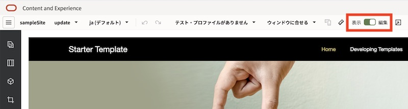
-
左サイドバーの 「ページ」 をクリックします。

-
今回のチュートリアルで利用しないページ（Developing TemplatesとPrivate Policy）を削除します
-
Developing Template をクリックします

-
「ゴミ箱」 アイコンをクリックします。続けて 「OK」 をクリックします

-
同じ手順で、Private Policy ページも削除します
-
最終的なページ階層は、Home のみとなります

-
-
Home のページ構成を編集します
-
Home をクリックします。続けて 「ページ構成」 アイコンをクリックします
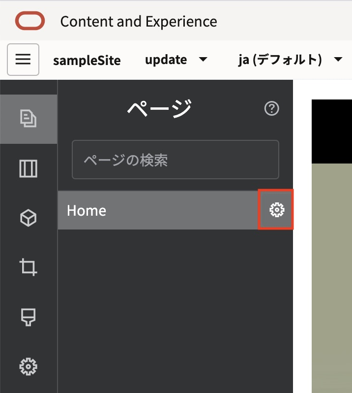
-
「ページURL」の 「オーバーライド」 を選択します。続けて、「ページ名」を「Home」からカタカナの 「ホーム」 に変更します
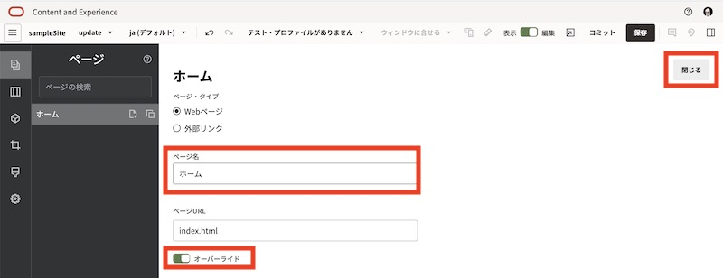
-
「閉じる」 をクリックします
-
-
右上の 「保存」 をクリックし、更新内容を保存します
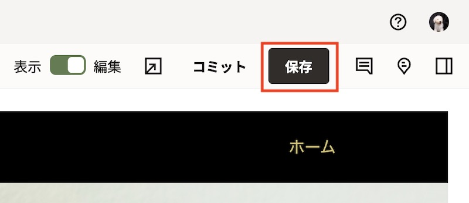
[Memo]
サイトの編集作業中は、定期的に更新内容を「保存」することを推奨します -
ホームページを編集します。ホームページには「タイトル」と「段落」のコンポーネントが配置されており、それぞれ英語のダミーテキストが入力されています

-
ホームページの 「タイトル」 と 「段落」 のテキストをそれぞれ日本語で編集します。ここでは以下の通りに編集します
- タイトル: ようこそ
-
段落: ここはサンプルサイトのホームページです

-
スイッチを編集→ 表示 に切り替え、「保存」 をクリックします

-
「ja (デフォルト) ▼」をクリックし、「en」 に切り替えます

-
英語サイトに切り替わります。以下を確認します
- ナビゲーション上の「ホーム」は日本語のまま
-
ページに配置した「タイトル」「段落」の文字は日本語のまま

[Memo]
ページ内に配置されたコンポーネントのテキスト（=サイト・コンテンツ）およびページ名の翻訳は 「翻訳ジョブ」 を利用します。次の手順でこれらの翻訳しします -
更新内容を適用します。「コミット」 をクリックします。確認のダイアログが表示されるので 「コミット」 をクリックします

[Memo]
コミット操作により、更新内容がベース・サイトに反映され、更新（ここでは update）は削除されます
3.2 サイトの翻訳（日本語→英語）
「翻訳ジョブ」を利用し、ページ内に配置した「タイトル」や「段落」のテキスト情報、およびページ名を日本語から英語に翻訳します。
-
sampleSite を選択し、「翻訳」 をクリックします
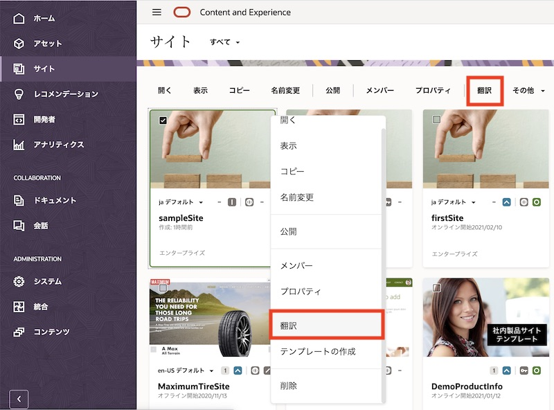
-
翻訳ジョブを作成します。ここでは、以下の通りに入力し、最後に 「作成」 をクリックします
- 名前: sampleSite_job
- ソース言語: 日本語 (ja) （※自動選択されます。変更不可）
- ターゲット言語: 英語 (en)
- 翻訳ジョブ・コンテンツ: サイト・コンテンツのみ
-
翻訳プロジェクト: 翻訳パッケージのエクスポート

-
「翻訳ジョブ」 をクリックします

-
sampleSite_job をクリックします
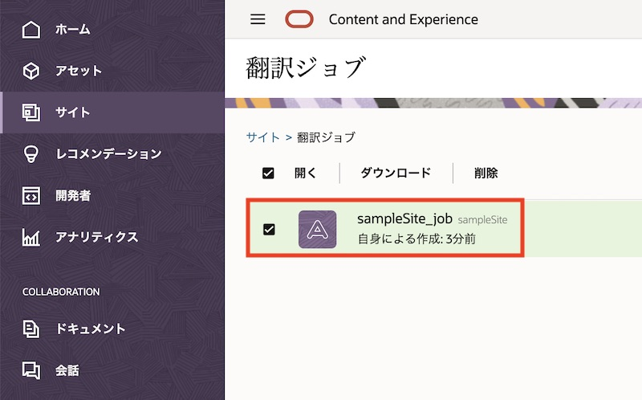
-
ステータスが「準備完了」であることを確認し、「ダウンロード」 をクリックします

-
ステータスが「進行中」に遷移し、翻訳パッケージ
sampleSite_job.zipがローカル環境にダウンロードされます -
ダウンロードされた
sampleSite_job.zipを任意のフォルダに移動し、展開します。展開すると、以下のような構成になりますsite # サイト全体もしくはサイトコンテンツの翻訳を保管するフォルダ root # ソース言語（ここでは日本語）のサイト情報およびサイトコンテンツが含まれます <page_ID>.json # 各ページのサイト・コンテンツの内容 siteinfo.json # サイトのプロパティ structure.json # サイトのページ構造（ナビゲーション）を記述 job.json # 翻訳ジョブの内容が記述。このファイルは編集しません
-
今回は、structure.jsonの「ホーム」のページ名、および 「ホーム」ページ内の「タイトル」「段落」 を翻訳します
-
root フォルダと同列に、翻訳対象のロケールと同じ名前のフォルダ（今回は en フォルダ）を作成します
-
enフォルダに、rootフォルダ内の.jsonファイルをすべてコピー します

-
enフォルダの structure.json をテキストエディタ等で開きます
-
“name”の”ホーム”を英語に翻訳します。ここでは “HOME” と書き換えます。

[Memo]
翻訳したホーム(HOME) の id が 10 とあります。これより、10.json が「ホーム」ページの定義ファイルであることが確認できます -
保存します
-
-
en フォルダの 10.json をテキストエディタ等で開きます
-
scs-titleの “ようこそ” を “Welcome” に翻訳します。
-
scs-paragraphの “これはサンプルサイトのホームページです” を “This is sampleSite Home Page” に翻訳します。

-
保存します
-
-
root フォルダ、en フォルダ、job.json を含む siteフォルダを圧縮 します。圧縮ファイルの名前は自由ですが、ここでは sampleSite_job_translated.zip とします

-
OCE の 「サイト」→「翻訳ジョブ」 を開きます。「インポート」 をクリックします
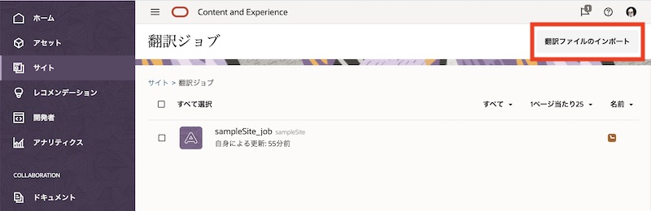
-
ドキュメントのフォルダが表示されます。任意のフォルダを開き、先ほど作成した sampleSite_job_translated.zip をアップロードします
-
アップロードした sampleSite_job001_translated.zip を選択し、「OK」 をクリックします

-
インポートファイルの検証が実行されます。正常終了することを確認し、「翻訳ジョブ内のすべてのページを表示します」 をクリックしすると、ジョブの内容を確認できます
-
「インポート」 をクリックします

-
「正常にインポートされました」を確認します。翻訳ジョブのステータスが 「翻訳済」 に遷移します
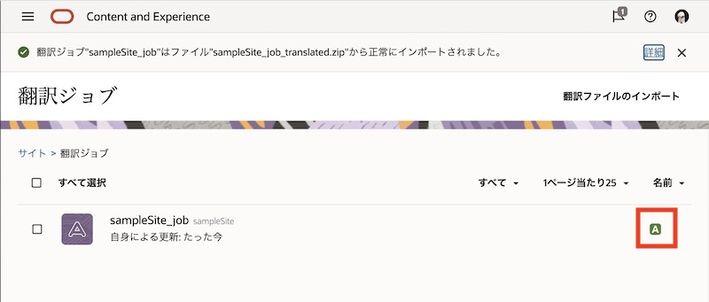
-
-
sampleSite をサイト編集画面で開きます。
-
「ja (デフォルト)」から 「en」 に切り替えます。ナビゲーションとページ内のテキストが、正しく翻訳されていることを確認します

-
サイト編集画面を閉じます
4. サイトの公開と確認
4.1 サイトの公開
サイトを公開します。オンライン状態のサイトを「公開」すると、ベース・サイトの内容がサイトにアクセス可能なユーザーすべてに表示されます
-
sampleSite を選択し、「公開」 をクリックします
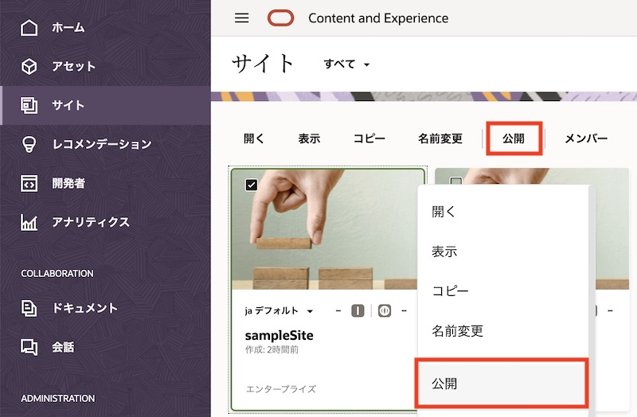
-
「サイトと、サイトのページに追加されているすべてのアセットの公開」 を選択し、「OK」 をクリックします
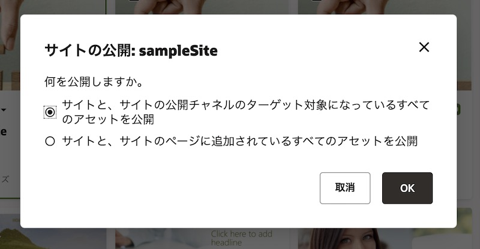
[Memo]
「サイトと、サイトの公開チャネルのターゲット対象になっているすべてのアセットを公開」を選択すると、サイトの公開チャネル（ここでは sampleSite）が設定されているすべてのアセット（含むサイトのページ上で利用されていないアセット）も、公開されます -
サイトの公開検証が行われます。検証チェックに合格したことを確認し、「公開」 をクリックします

-
しばらくすると、サイトのステータスが 「公開」 に遷移します

4.2 サイトをオンラインにする
サイトを「オンライン」にします。サイトをオンラインにすると、完全にレンダリングされたHTMLバージョンのサイトが作成され、Oracle Cloud のホスティング環境にコピーされます。オンライン・サイトのURLは、サイトのプロパティより確認できます。デフォルトのURLの形式は次のとおりです。
https://<OCE instance>-<Cloud accont>.ocecdn.oraclecloud.com/site/<Site name>
-
sampleSite を選択し、「オンラインにする」 をクリックします

-
「確認して続行」 にチェックを入れ、「オンラインにする」 をクリックします
-
サイトがオンライン状態に遷移します

4.3 確認
公開されたオンライン状態の多言語サイトを確認します。
-
sampleSite001 を選択し、「表示」 を開きます
-
日本語サイトが表示されます。

-
URL の
/sampleSiteの後ろに “/en/” を入れます。英語サイトが表示されます
5. サイト上で利用するアセットの作成と公開
5.1 説明
前の手順で作成した多言語サイト(sampleSite)で利用するアセットを作成します。ここでは、以前のチュートリアルで登録したしたデジタルアセット（ここではコーヒーカップの画像）を利用したコンテンツ・アイテムを作成します。
コンテンツ・アイテムは、複数の言語に翻訳（ローカリゼーション）できます。翻訳できるのはコンテンツ・アイテムのみで、画像や動画などのデジタル・アセットは翻訳できません。
コンテンツ・アイテムの翻訳方法は2パターンです
-
OCEのアセットUIを利用し、1件ずつ翻訳版のコンテンツ・アイテムを作成する。マスター言語と翻訳言語を比較・確認ながら、翻訳作業を進めることができます
-
翻訳ジョブにより複数のコンテンツ・アイテムをまとめて翻訳する。前の手順でサイト・コンテンツの翻訳で利用した仕組みと同じです
翻訳（ローカリゼーション）に関する注意事項
-
コンテンツ・アイテムで作成可能な言語は、リポジトリに関連付けられた 公開チャネルのローカリゼーション・ポリシー および リポジトリに選択された追加の言語 により決定されます。
-
コンテンツ・アイテムは 翻訳不能 に設定できます。翻訳不能と設定されたコンテンツ・アイテムは、翻訳版のコンテンツ・アイテムを作成できません。
-
作成済コンテンツ・アイテムを「翻訳不能」に設定すると、すべての翻訳済のコンテンツ・アイテムが削除 され、マスター言語のみとなります
-
翻訳済のコンテンツ・アイテムは、元のマスター言語とは別のコンテンツ・アイテムとして存在します。そのため、マスター言語のコンテンツ・アイテムに影響を与えずに、翻訳済コンテンツ・アイテムの編集や削除を行うことができます。
5.2 コンテンツ・アイテム（日本語）の作成
日本語のコンテンツ・アイテムを作成します。
-
左ナビゲーションの 「アセット」 をクリックします。
-
リポジトリで Sample Content Repository が選択し、右上の 「作成」→「新規コンテンツ・アイテムを作成します」 をクリックします
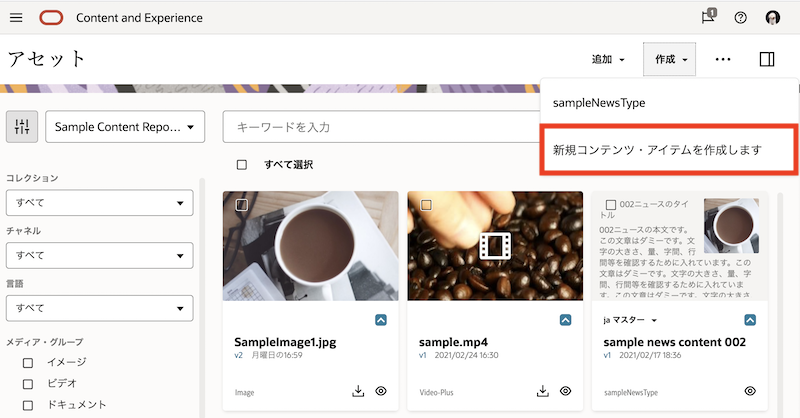
-
コンテンツ・タイプで sampleNewsType を選択し、「OK」 をクリックします

- 「コンテンツ・アイテム・プロパティ」 と 「チャネル」 に以下の通り入力します
- コンテンツ・アイテム・プロパティ
- 名前: sample news content 003
- 説明: （任意）
- 言語: 日本語 (ja)
- 翻訳不能: チェックしない
- チャネル
-
ターゲット対象チャネル： sampleSite を追加

-
- コンテンツ・アイテム・プロパティ
- 続けて「コンテンツ・アイテム・データ・フィールド」に入力します。ここでは下記の通りに入力します
- コンテンツ・アイテム・データフィールド
- タイトル: 003ニュースのタイトル
- メイン画像: 以前に登録したデジタルアセット（ここではコーヒーカップの画像）を選択
-
ニュース本文: 003ニュースの本文です

- コンテンツ・アイテム・データフィールド
- 「保存」 をクリックします
5.3 コンテンツ・アイテム（英語翻訳版）の作成
前の手順で作成した日本語のコンテンツ・アイテムを利用し、翻訳版の英語コンテンツを作成します。ここでは、OCEのアセットUIを利用して翻訳作業を実施します
-
sample news content 003を選択し、「言語」 をクリックします。
-
「既存の言語の表示▼」 をクリックし、sampleSite を選択します。

-
英語(en) のコンテンツ・アイテムが 「必須」 であることを確認し、「＋」 をクリックします。

-
「言語の追加」パネルが表示されます。 「コンテンツ・アイテム・プロパティ」 に以下を入力します。
- 名前: sample news content 003 English
- 説明:（任意）
- 言語: 英語 (en)
-
右上の 「比較」 をクリックします。

-
「比較対象」の項目で 「日本語 (ja)」 を選択し、「すべてコピー」 をクリックします。

-
コンテンツ・アイテム・データ・フィールドのすべての入力フィールドに、日本語版のコンテンツ・アイテムの入力内容がすべてコピーされます。

-
「タイトル」の入力内容を翻訳します。ここでは 「003 News Title」 とします。

[Memo]
入力フォーム下の比較の右隣の 「表示」 をクリックすると、日本語(ja)の入力内容が表示されます。「コピー」 をクリックすると、日本語(ja)の入力内容が入力フォームにコピーされます -
同じ要領で 「ニュース本文」 を翻訳します。ここでは 「This is the body of 003 news.」 とします。なお、「メイン画像」は変更せず、日本語と同じものを利用します。
-
「保存」 をクリックします
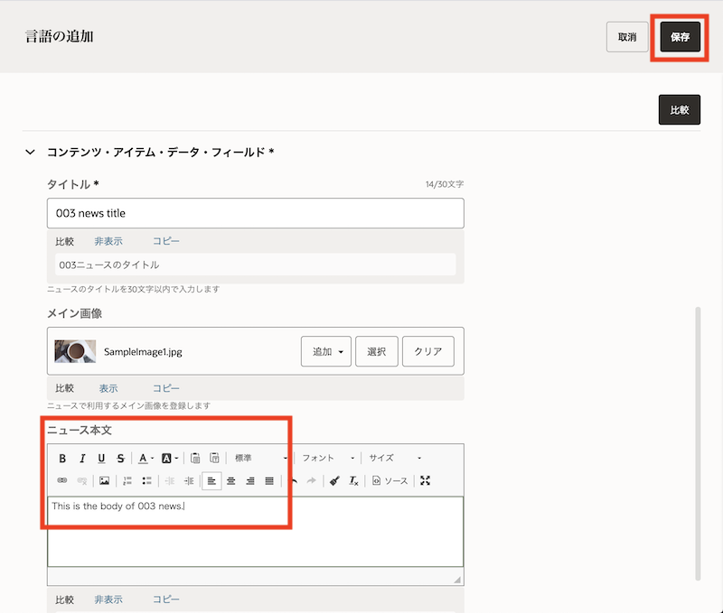
-
作成した sample news content 003 English を選択し、「翻訳済として設定」 をクリックします。ダイアログが表示されるので 「はい」 をクリックします・

-
「閉じる」 をクリックします
-
作成した sample news content 003 English の 「ja マスター▼」 をクリックします。マスターの日本語(ja)と英語(en)が管理されていることが確認できます。また、日本語(ja)が「ドラフト」、英語(en)が「翻訳済」であることが確認できます
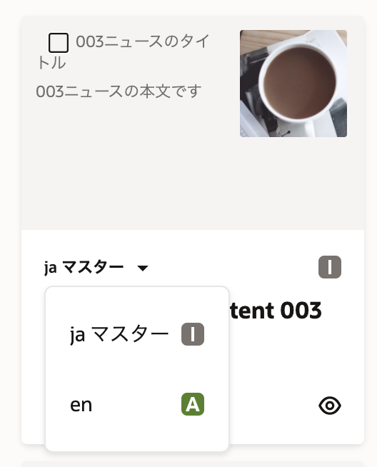
5.4 コンテンツ・アイテムの公開
作成されたコンテンツ・アイテム（日本語＆英語）を、Web サイトの公開チャネル(sampleSite) に公開します
-
sample news content 003 を選択し、「今すぐ公開」をクリックします

[Memo]
OCEのバージョン21.2.1 より、アセットの公開は「即時公開」と「スケジュール公開」の2つが選択できるようになりました。ここでは即時公開の「今すぐ公開」を選択します。スケジュール公開の場合は「後で公開」を選択し、公開日時を設定します。スケジュール公開の詳細は、以下のドキュメントをご確認ください -
検証結果を確認します。ターゲットの対象チャネルが sampleSite であること、合計問題数が0(ゼロ)件であること、をそれぞれ確認し、「公開」 をクリックします

-
日本語(ja)も英語(en)も、ステータスが 「公開済」 であることを確認します

6 アセットをサイト上に配置
6.1 サイトの編集と公開
多言語サイトsampleSiteを編集し、前の手順で作成・公開したコンテンツ・アイテムsample news content 003を表示するようにします。
-
sampleSite をサイト編集画面で開きます
-
「ベース・サイト▼」 をクリックし、「新規更新の作成」 を選択し、新規更新を指定します（ここでは update を指定）
-
「update」に切り替わっていることを確認します。表示側にあるスイッチをクリックし、「編集」 モードに切り替えます
-
ホームページの「段落」コンポーネントの下に、作成した
sample news content 003を配置します。左メニューの 「アセット」 をクリックします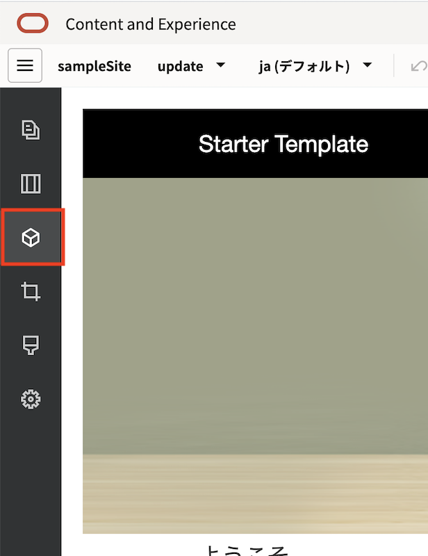
-
アセットの 「>」 をクリックし、アセット選択メニューを拡げます

-
検索ボックスの 「コンテンツ・アイテム」以外の選択 を外します。アセット選択メニューにコンテンツアイテムのみが表示されます
-
「<」 をクリックし、拡げたアセット選択メニューを元に戻します
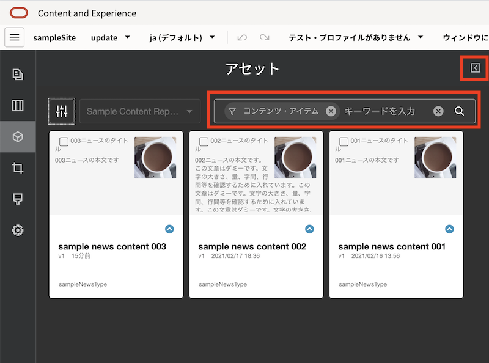
-
sample news content 003 を、段落コンポーネントの下にドラッグ&ドロップで配置します

-
sample news content 003の日本語(ja)が正しく表示されることを確認します。編集側にあるスイッチをクリックし、「表示」 モードに切り替えます
-
「ja (デフォルト)」から 「en」 に切り替えます。
sample news content 003の英語(en)翻訳版が正しく表示されることを確認します
-
サイトの編集内容を 「保存」 します。続けて、「コミット」 をクリックし、更新内容をベースサイトに反映させます
6.2 サイトの再公開
コミットしたベースサイトの内容を再公開します。すでにオンライン状態のサイトに「再公開」を実施すると、ベースサイトの内容がオンラインサイトに即時反映されます。サイト訪問者は再公開されたサイトを表示・閲覧できます。
-
sampleSite の 「再公開」 をクリックします。更新内容が、オンラインサイトに反映されます
-
オンラインサイトを確認します。日本語サイトの場合は、日本語のコンテンツアイテムが、英語サイトの場合は、英語のコンテンツアイテムが、それぞれ表示されることを確認します
-
日本語(ja)サイト

-
英語(en)サイト

-
以上でこのチュートリアルは終了です。